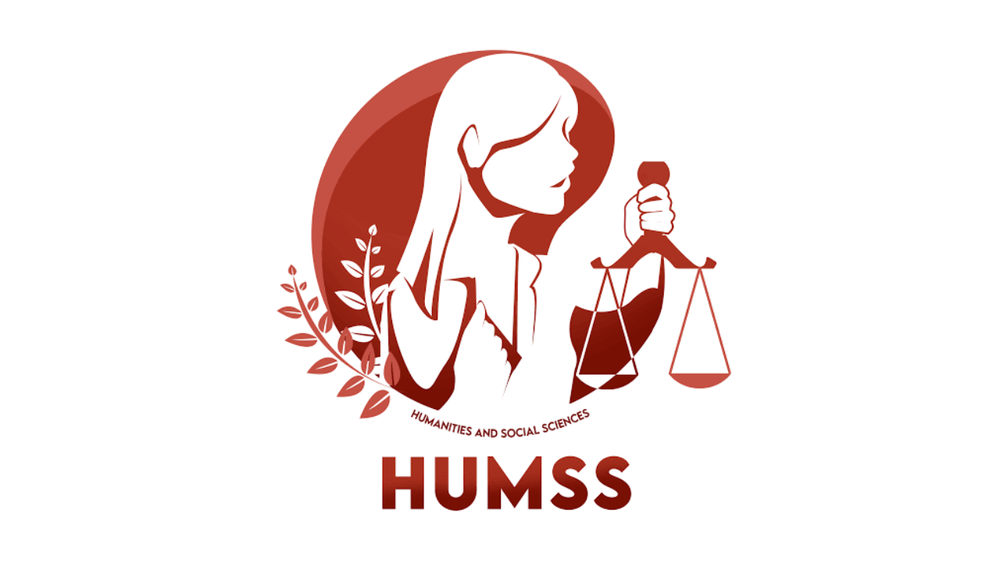

HUMSS STRAND
WHAT IS HUMSS STRAND?
The HUMSS strand in senior high school is designed to effectively prepare students who seek to pursue a college degree in liberal education. HUMSS courses cover a variety of subjects, looking at the world and its people from various points of view. The learning activities are directed towards the development of critical thinking. HUMSS also focuses on developing your oral communication, media and information, and will hone your skills in reading and writing to a professional level. Because the HUMSS strand is intended for those who wish to explore careers in social sciences, this strand will involve a lot of research and presentation, making it a good preparation for their future careers as journalists, lawyers, teachers, politicians, writers, and psychologists.
Possible College Courses Under the HUMSS Strand
The HUMSS strand prepares students for a number of college courses. Here are some of the HUMSS courses in college students can pursue.
•Bachelor of Arts in Psychology
•Bachelor of Science in Psychology
•Bachelor of Science in Technical Communication
•Bachelor of Science in Education Technology
Possible Career Paths with the HUMSS Strand
Students enrolled in the HUMMS strand in senior high school can make meaningful contributions to their workplace and community in the following professions:
•Psychologists
•Therapists
•Doctors
•Counselors
•Lawyers
•Reporters
•Journalists
•Writers
•College Professors
•Teachers